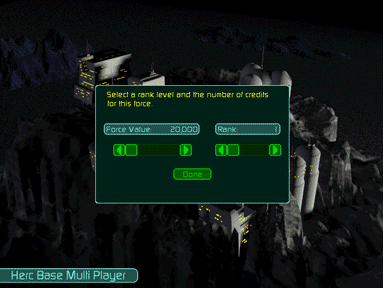
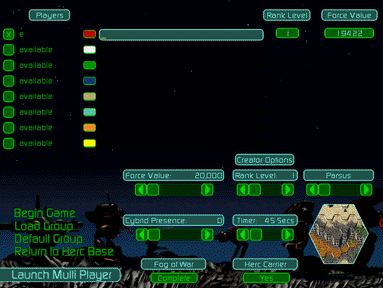

This is the staging area for all parties in a multi-player game. As each party logs in to a multi-player game, their names appear in the list of player names. To the right is the list of Force Values and Rank Levels for each player. If either of your numbers appears in red, then you currently exceed the parameters set forth by the game’s creator. Return to the Herc Base to make the necessary corrections. Or you may choose to load a different group (with the Load Group option) or a Default Group at this point. This will automatically load a pre-configured group that comes as close as possible to the established Rank Level and Force Value without exceeding either of them. It is essentially a quick start (although lazy) method of joining a multi-player game.
You may then select the color code for your group by clicking on the color swatch to the right of your name. Consecutive clicks will toggle through all available colors. Your Hercs will actually appear in this color while on the battlefield to distinguish them from other players.
When your particular group is assembled and ready for battle, click the check box to the left of your name to signal the others that you are ready. You will only be able to check this if your group is “legally” prepared for battle. Checking this box also locks in your color code.
You will see a message bar to the right of your color swatch. This is where you may type in messages to any or all other players in the game. You may determine who receives your messages by toggling on/off the names under the Communications pull-down menu. You may continue to send and receive messages while in battle by hitting the [Enter] key and typing away.
All of the other options on this menu are available only to the game’s creator. Click here to read about them. Otherwise, click Begin Game to proceed to Multi-Player Battle.
